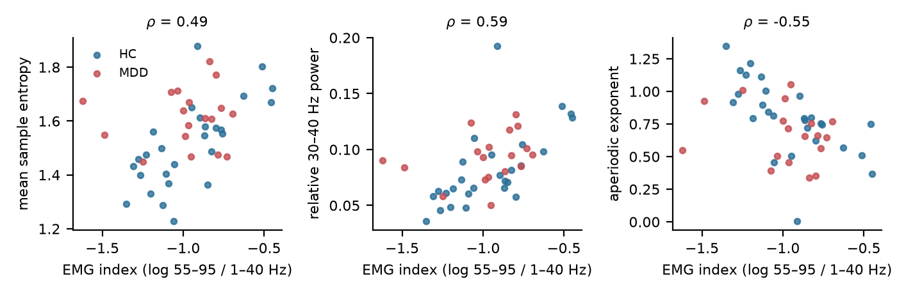
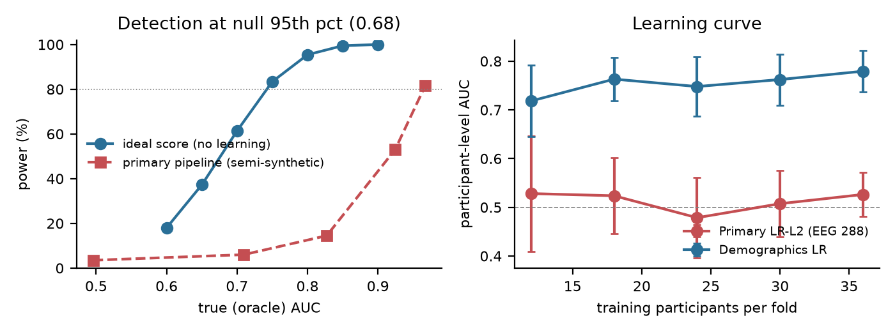

Audit results (exploratory)#
These models are post hoc (deviation D6). Holm correction is applied among them. ΔAUC is compared with the demographic baseline using the corrected resampled \(t\)-test.
Model (exploratory) |
AUC [95% CI] |
p (perm.) |
p (Holm) |
ΔAUC vs demographics (p) |
|---|---|---|---|---|
Demo+EEG288 |
0.52 [0.35, 0.69] |
0.746 |
1.000 |
-0.25 (0.014) |
Demo+Compact |
0.59 [0.42, 0.75] |
0.584 |
1.000 |
-0.17 (0.089) |
EEG288-deconfounded |
0.49 [0.32, 0.66] |
0.703 |
1.000 |
-0.28 (0.009) |
EEG288-PCA-LR |
0.58 [0.42, 0.75] |
0.381 |
1.000 |
-0.18 (0.085) |
Compact-LR |
0.51 [0.34, 0.68] |
0.502 |
1.000 |
-0.27 (0.009) |
Behaviour-RT-LR |
0.44 [0.27, 0.62] |
0.726 |
1.000 |
-0.37 (0.002) |
Subject-Riemann-TS-LR |
0.53 [0.35, 0.70] |
0.064 |
0.448 |
-0.28 (0.065) |
Does EEG add to demographics?#
No. When EEG is added to age, sex and education, the AUC falls below that of demographics alone. A permutation of the EEG block only is not significant.
Muscle activity#
The EMG index (55–95 Hz power relative to 1–40 Hz, computed on the raw recording before the 40 Hz low-pass) did not differ between groups. It did correlate with several features:
Feature |
Spearman ρ with the EMG index |
|---|---|
Sample entropy (global) |
0.49 |
Lempel–Ziv complexity (global) |
0.42 |
Relative beta power |
0.42 |
Relative 30–40 Hz power |
0.59 |
Aperiodic exponent |
−0.55 |
wPLI feature that survived FDR |
0.18 (n.s.) |
Complexity, high-beta and aperiodic measures of task EEG should be reported with an EMG control before they are attributed to depression.


Fig. 11 Raw-data EMG index against the features it tracks.#
Power, learning curve and sample size#


Fig. 12 (a) Power to exceed the permutation threshold, for an ideal score and for the primary pipeline learning an injected effect. (b) Learning curve of the primary and demographic models.#
The study’s power was limited:
The 95th percentile of the primary model’s permutation null was AUC 0.68.
An ideal, pre-trained score would exceed it with probability 61% at a true AUC of 0.70, 83% at 0.75 and 95% at 0.80.
When the primary pipeline had to learn an injected effect from 36 participants, power was 15% at an oracle AUC of 0.83, 53% at 0.92 and 82% at 0.97.
Between 12 and 36 training participants, the primary model stayed flat (about 0.53), while the demographic model rose from 0.72 to 0.78.
Sample-size guidance (16_sample_size.py). This is an optimistic lower bound: it assumes an ideal score, the
same class ratio and a one-sided α = 0.05.
True AUC |
Participants for 80% power |
|---|---|
0.70 |
about 60 |
0.65 |
about 100 |
0.60 |
about 300 |
A pipeline that also has to learn the effect needs more participants than this. Studies at this scale will usually need several sites, which makes site harmonisation and demographic baselines essential.